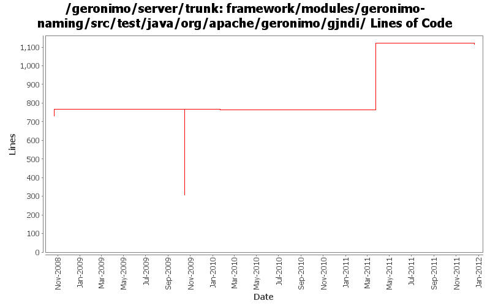

[root]/framework/modules/geronimo-naming/src/test/java/org/apache/geronimo/gjndi
 binding
(2 files, 213 lines)
binding
(2 files, 213 lines)

| Author | Changes | Lines of Code | Lines per Change |
|---|---|---|---|
| Totals | 24 (100.0%) | 927 (100.0%) | 38.6 |
| djencks | 19 (79.2%) | 542 (58.5%) | 28.5 |
| violalu | 4 (16.7%) | 384 (41.4%) | 96.0 |
| xuhaihong | 1 (4.2%) | 1 (0.1%) | 1.0 |
GERONIMO-6240 Make several base geronimo functions (kernel, deployer, etc) DS services and make the car-maven-plugin take advantage of that. Server assembly doesn't work yet, builds framework.
23 lines of code changed in 2 files:
GERONIMO-5874 Update KernelContextGBean.java
384 lines of code changed in 4 files:
GERONIMO-5057 Use those xmlbeans generated by JAVA EE 6 schema files
1 lines of code changed in 1 file:
GERONIMO-5025 Initial work on ee 6 scoped jndi stuff. Minimal testing so far
25 lines of code changed in 6 files:
GERONIMO-4916 step 2 move sandbox osgi framework into trunk
459 lines of code changed in 3 files:
GERONIMO-4916 step 1 remove old framwork
0 lines of code changed in 3 files:
GERONIMO-4375 fix rebind of entry originating from deepBind. See XBEAN-115
35 lines of code changed in 5 files: